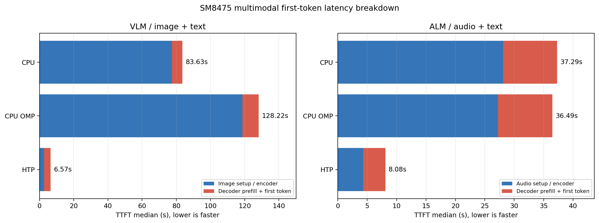
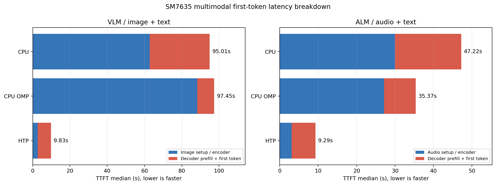

How to run fast LLM / VLM inference on the NPU of Qualcomm SoCs using the QNN backend of ailia LLM.
ailia LLM 1.5.0 and later support fast inference on the NPU (Hexagon) of Qualcomm SoCs. For the NPU, ailia LLM uses a proprietary implementation developed by ailia Inc. that is separate from llama.cpp, and it accelerates prefill by up to 3.3x on Android devices while keeping CPU use during prefill below one twentieth of the CPU path (Snapdragon 8+ Gen 1, 2,048-token input, compared with the CPU on the same device). In addition to text LLMs and VLMs (Vision Language Models) that take images as input, ailia LLM also supports audio input, with processing on the NPU.
QNN (Qualcomm AI Engine Direct) is a backend API provided by Qualcomm. ailia LLM achieves NPU inference by converting GGUF, the model format of llama.cpp, into a format that can be executed by QNN.
The table below compares ailia LLM with the main approaches for running LLMs on Qualcomm SoCs on Android. ailia LLM can use the NPU, runs Gemma 4 on the NPU, and supports relatively old SoCs with Hexagon v69 or later.
| Approach | NPU | Gemma 4 | Supported SoCs (Android) | Notes |
|---|---|---|---|---|
| llama.cpp | No | Yes | No restriction (CPU execution) | Runs on the CPU. An experimental Hexagon backend exists, but its NPU-side libraries (Skel) are unsigned, so it cannot run on regular devices. The image encoder runs on the CPU. |
| QNN (Qualcomm AI Engine Direct) | Yes | No | Hexagon v65 or later (Snapdragon 845 or later) | Low-level inference API; no LLM runtime is provided. |
| QNN GenAI (Qualcomm Genie / GenieX) | Yes | No | Hexagon v79 or later (Snapdragon 8 Elite or later) | The officially supported Android SoCs are limited to the Snapdragon 8 Elite family, and Hexagon v79 or later is required. No NPU (QAIRT) model is provided for Gemma 4. |
| LiteRT-LM NPU | Yes | No | Snapdragon 8 Gen 2 / 8 Gen 3 / 8 Elite (SM8550 / SM8650 / SM8750) | The only NPU model published for Qualcomm is Gemma3-1B (4-bit, 1,280 context). NPU models for Gemma 4 are provided only for Google Tensor and Intel. It is text only and does not support image or audio input. |
| ailia LLM | Yes | Yes | Hexagon v69 or later (Snapdragon 8 Gen 1 or later) | Uses the NPU even on older SoCs such as Snapdragon 8+ Gen 1, and runs Gemma 4 E2B / E4B on the NPU for both text and VLM. |
A GGUF file is converted into a QNN Model on a PC, and the converted QNN Model is executed by ailia LLM on the device. The GGUF file is not needed on the device; only the QNN Model is deployed.
A QNN Model stores a fixed-length prefill graph (AR-N) and a decode graph (AR-1) in the same QNN context, sharing the weights and the KV cache between them. Weights are quantized to 4 bits (W4) at conversion time. In FP16 models, activations and the KV cache are processed in FP16.
ailia LLM Compiler supports both FP16 and Int16, which can be selected at conversion time according to the target SoC. The Snapdragon 7s Gen 3 NPU uses Hexagon v73 but does not support FP16, so ailia LLM uses an Int16-quantized model on this SoC. The Qualcomm Snapdragon 7s Gen 3 product brief (PDF, Artificial Intelligence section on page 2) lists INT4, INT8, and INT16 as supported NPU precisions; FP16 is not included. Select a model based on the precisions supported by the specific SoC, as well as its Hexagon version.
Gemma 4 E2B and Gemma 4 E4B (both supporting text, image, and audio input) are currently supported. For VLM, a QNN Model for the image encoder (mmproj) is used in addition to the text QNN Model. The supported models depend on the Hexagon version of the SoC.
| Hexagon version | Example SoCs | Supported models | Context length |
|---|---|---|---|
| v69 | Snapdragon 8 Gen 1 / 8+ Gen 1 | Gemma 4 E2B | 8K |
| v73 or later | Snapdragon 8 Gen 2 or later | Gemma 4 E2B / E4B | 8K |
QNN Models are separate files for each Snapdragon model (SoC). Pre-converted model files are provided, so please use the file that matches the SoC of your target device.
| File | Contents |
|---|---|
<soc>.qnn (e.g. sm8475.qnn) | Text model (prefill + decode) |
<soc>-mmproj.qnn (e.g. sm8475-mmproj.qnn) | Image encoder (mmproj) for VLM |
Pre-converted QNN Models for Gemma 4 E2B can be downloaded below. To use VLM or audio input, download both the text model and the mmproj file.
| SoC | Example device | File | Contents | Size |
|---|---|---|---|---|
| sm8475 (Hexagon v69 / FP16) | Snapdragon 8+ Gen 1 | gemma4-e2b-sm8475.qnn | Text model (prefill + decode) | 3.60 GB |
| gemma4-e2b-sm8475-mmproj.qnn | Image / audio encoder (mmproj) | 1.11 GB | ||
| sm7635 (Hexagon v73 / Int16) | Snapdragon 7s Gen 3 | gemma4-e2b-sm7635.qnn | Text model (prefill + decode) | 3.57 GB |
| gemma4-e2b-sm7635-mmproj.qnn | Image / audio encoder (mmproj) | 0.63 GB |
All of these are for ailia LLM 1.5.0 (QAIRT 2.47.0.260601), with a context length of 8192 and the AR-256 / AR-1 configuration.
ailiaLLMGetQNNModelName API) and we will compile a QNN Model for it with ailia LLM Compiler. Please contact ailia for details.
ailiaLLMGetQNNModelName API (e.g. "sm8475").
In addition to libailia_llm.so, bundle libailia_llm_qnn.so in jniLibs/arm64-v8a of your application. The app loads only libailia_llm.so; libailia_llm_qnn.so is lazily loaded as a plug-in only when a QNN Model is opened.
You need to declare the use of libcdsprpc.so in AndroidManifest.xml. Also enable extractNativeLibs, because the NPU-side libraries (libQnnHtpV*Skel.so) must be reachable through a regular filesystem path.
<application android:extractNativeLibs="true" ...>
<uses-native-library android:name="libcdsprpc.so" android:required="false"/>
</application>Add the following to build.gradle so that the QNN runtime is automatically bundled into the apk.
implementation 'com.qualcomm.qti:qnn-runtime:2.47.0'A QNN Model (.qnn) is passed to the same model loading API as a GGUF file. When the context size is set to 0, the fixed context length embedded in the QNN Model is used. For VLM, open the mmproj QNN Model as the projector after opening the text model.
#include "ailia_llm.h"
struct AILIALLM *llm = nullptr;
ailiaLLMCreate(&llm);
ailiaLLMOpenModelFileA(llm, "sm8475.qnn", /*ctx_size=*/0);
ailiaLLMOpenMultimodalProjectorFileA(llm, "sm8475-mmproj.qnn"); // VLM only
// The prompt / generate APIs are the same as for GGUF
ailiaLLMDestroy(llm);In Kotlin (JNI), pass the path of the QNN Model instead of the GGUF path in the same way.
val llm = AiliaLLM()
llm.openModelFile(qnnModelPath, 0) // n_ctx=0 uses the fixed length in the QNN Model
llm.openMultimodalProjectorFile(mmprojQnnPath) // VLM onlyAn evaluation apk for Android can be downloaded from the link below. The QNN-enabled build is ailia-models-kotlin-qnn.apk.
https://github.com/ailia-ai/ailia-models-kotlin/releases/tag/v260720 (TBD)
ailia LLM maps the QNN Model with mmap, restores the QNN context, and executes it on the Hexagon NPU (HTP). Prefill is processed with the fixed-length AR-N graph; when the prompt length is not a multiple of AR, the last slice is padded. Decode uses the AR-1 graph in the same context, so no KV cache copy occurs after prefill. For VLM, image patching and position embedding are performed on the CPU, and the 16-layer Vision Transformer, pooling and projection are executed in a single QNN graph. Audio input uses an Audio graph to run the audio encoder on the NPU. The per-layer embedding (PLE) frontend also runs inside each transformer graph, leaving only token-row lookup and media embedding replacement on the CPU. This improves prefill for the Int16 model compared with running that input processing on the CPU.
The following results were measured with Gemma 4 E2B on two devices. Snapdragon 8+ Gen 1 (SM8475 / Hexagon v69, ASUS AI2202) uses the FP16 model, and Snapdragon 7s Gen 3 (SM7635 / Hexagon v73) uses the Int16 model. Both were measured with QAIRT 2.47.0.260601, a context length of 8192, Q4_0 input and the AR-256 / AR-1 configuration. The NPU numbers were measured with the 2026-09-16 production package, which runs the PLE frontend on the NPU.
The CPU numbers run the same Q4_0 GGUF through the standard llama.cpp path on the same device (8 decoder workers, context 8192, NDK r27c). The shipping configuration is the build with OpenMP disabled, which is the "CPU" column. "CPU (OpenMP)" is a comparison build made with GGML_OPENMP=ON and OMP_NUM_THREADS=2.
Throughput while generating 1,000 tokens.
| Device | Model | CPU | CPU (OpenMP) | NPU (QNN) | Effect of the NPU |
|---|---|---|---|---|---|
| SM8475 (Hexagon v69) | FP16 | 9.971 tokens/s | 8.482 tokens/s | 7.843 tokens/s | 0.79x |
| SM7635 (Hexagon v73) | Int16 | 6.045 tokens/s | 4.730 tokens/s | 6.883 tokens/s | 1.14x faster |
On SM7635, NPU decode is 1.14x faster than the CPU (1.46x faster than the OpenMP build). On SM8475 the CPU is faster: decode processes one token at a time, so it is dominated by weight loading and does not benefit much from the parallel compute of the NPU.


Throughput (tokens/s) for input lengths from 64 to 2,048 tokens. Each condition generates 100 tokens.
| Input tokens | SM8475 CPU | SM8475 CPU (OpenMP) | SM8475 NPU (FP16) | SM7635 CPU | SM7635 CPU (OpenMP) | SM7635 NPU (Int16) |
|---|---|---|---|---|---|---|
| 64 | 69.627 | 49.362 | 23.978 | 92.689 | 76.227 | 14.296 |
| 128 | 86.688 | 61.941 | 147.489 | 97.005 | 83.779 | 55.247 |
| 256 | 61.918 | 53.572 | 265.230 | 80.064 | 67.042 | 109.083 |
| 512 | 84.692 | 75.048 | 286.695 | 105.030 | 100.753 | 111.699 |
| 1024 | 90.603 | 77.651 | 293.811 | 112.090 | 105.844 | 111.440 |
| 2048 | 86.761 | 72.302 | 286.029 | 96.678 | 93.273 | 110.301 |
actual input tokens / time of the first generate call, measured after a two-token warmup.

Process CPU time measured around the first generate call of a 2,048-token prefill (median of three runs), expressed as a share of all 8 cores fully occupied (8 cores = 100%). This is the utilization of the application process, not of the whole device.
| Device | CPU | CPU (OpenMP) | NPU (QNN) |
|---|---|---|---|
| SM8475 | 98.2% | 86.2% | 4.0% |
| SM7635 | 93.0% | 98.0% | 3.4% |
On the NPU, CPU use during prefill stays around 4%, leaving the CPU available for the rest of the application. Across three consecutive runs, PPS varied by 4.5% (SM8475) and 2.1% (SM7635) on the NPU, against up to 64.0% and 38.5% for the CPU configurations. CPU performance drops considerably under continuous operation, while NPU performance stays stable.
Throughput (tokens/s) of the same 2,048-token prefill run three times in a row.
| Device / path | Run 1 | Run 2 | Run 3 |
|---|---|---|---|
| SM8475 CPU | 129.377 | 68.112 | 60.324 |
| SM8475 NPU (FP16) | 272.190 | 265.726 | 259.892 |
| SM7635 CPU | 106.273 | 38.289 | 39.740 |
| SM7635 NPU (Int16) | 109.307 | 109.252 | 106.963 |
On SM7635 the CPU and the NPU are nearly identical on the first run, but from the second run on the CPU falls to about a third of that because of thermal throttling. The NPU holds the same throughput across all three runs, so in real use with continuous inference the NPU is about 2.8x faster. On SM8475 the CPU also drops to about half from the second run on, widening the gap with the NPU from 2.1x to 4.3x.
Medians over the same 10 images at 768x768 with 100 output tokens each. TTFT is the prompt setup including the image encoder plus the first generate call, excluding model opening.
| Device / path | TTFT (median) | Decode (median) |
|---|---|---|
| SM8475 CPU | 83.63 s | 12.081 tokens/s |
| SM8475 CPU (OpenMP) | 128.22 s | 7.491 tokens/s |
| SM8475 NPU (FP16) | 6.57 s | 7.692 tokens/s |
| SM7635 CPU | 95.01 s | 5.891 tokens/s |
| SM7635 CPU (OpenMP) | 97.45 s | 3.569 tokens/s |
| SM7635 NPU (Int16) | 9.83 s | 6.982 tokens/s |
Image TTFT is about 12.7x faster on SM8475 and about 9.7x faster on SM7635. Both the CPU and the NPU consume the same 768x768 pixels and the same 256 image embeddings.


Medians over 10 FLEURS recordings (2 each in 5 languages, generated to natural EOS with a 256-token cap). TTFT is the prompt setup including the audio encoder plus the first generate call, excluding model opening.
| Device / path | TTFT (median) | Decode (median) | Output tokens |
|---|---|---|---|
| SM8475 CPU | 37.29 s | 10.416 tokens/s | 21-89 |
| SM8475 CPU (OpenMP) | 36.49 s | 10.539 tokens/s | 21-89 |
| SM8475 NPU (FP16) | 8.08 s | 7.193 tokens/s | 21-60 |
| SM7635 CPU | 47.22 s | 5.167 tokens/s | 21-89 |
| SM7635 CPU (OpenMP) | 35.37 s | 3.847 tokens/s | 21-89 |
| SM7635 NPU (Int16) | 9.29 s | 6.539 tokens/s | 21-90 |
Audio TTFT is about 4.6x faster on SM8475 and about 5.1x faster on SM7635.